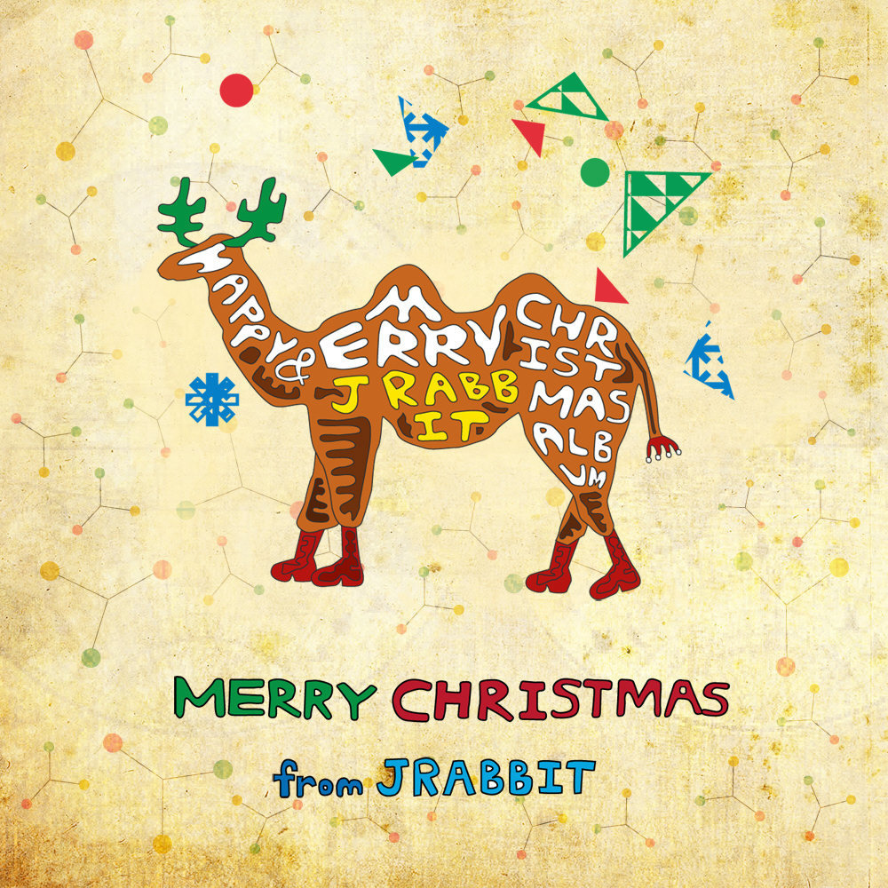
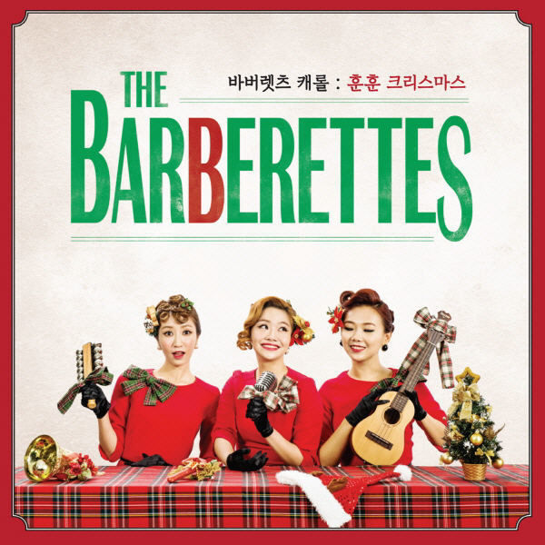
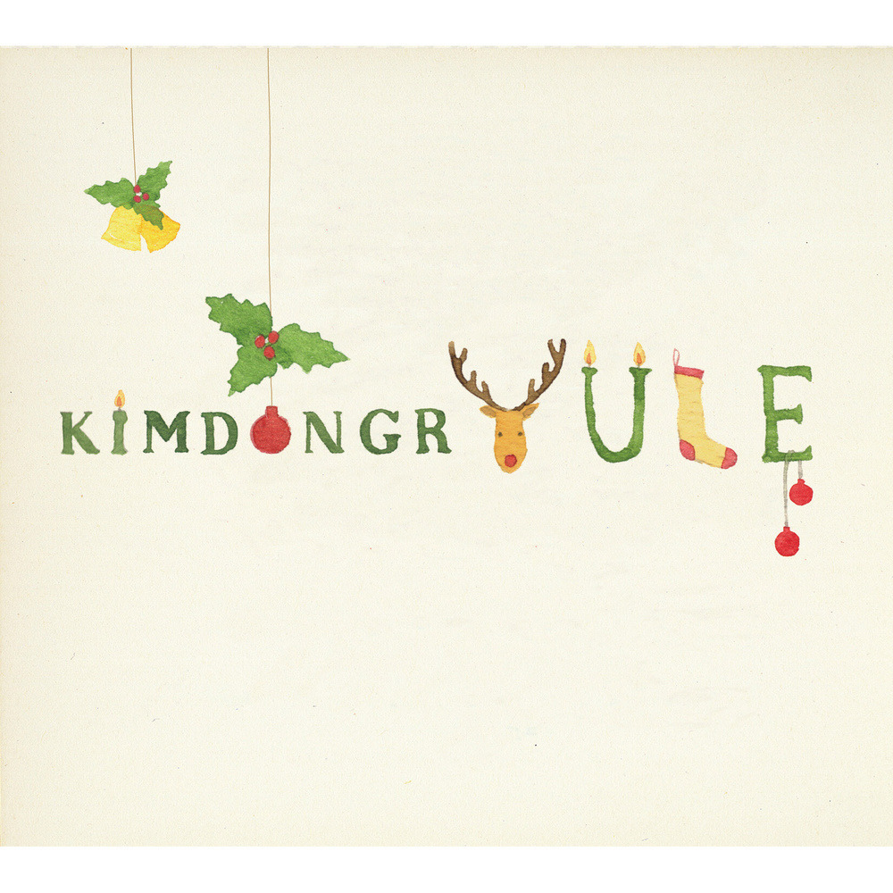

안녕하세요 한스입니다.
크리스마스 시즌이 다가오면서 따뜻한 감성을 전하는 음악들이 우리의 마음을 채워줍니다. 오늘은 크리스마스에 따뜻함을 더해줄 국내 가수의 특별한 크리스마스 앨범 3개를 소개해드리려고 합니다.
제이래빗 - "Merry Christmas From J Rabbit"

인디 듀오 제이래빗의 "Merry Christmas From J Rabbit"은 2012년 11월 30일에 발매된 크리스마스 앨범입니다. 이 앨범은 기존의 소박한 악기 구성에 스트링 앙상블을 더해 풍성한 사운드를 선보입니다. 총 11트랙으로 구성된 이 앨범에는 다양한 크리스마스 캐롤과 자작곡이 수록되어 있습니다.
주요 수록곡으로는 2010년 싱글로 발표했던 곡을 새롭게 녹음한 곡인 "Winter Wonderland"를 포함하여 "Sleigh Ride", "Oh Holy Night", "We Need a Little Christmas"와 "This Christmas" 등 잘 알려진 캐롤을 제이래빗만의 스타일로 해석한 50~60년대 뮤지컬 사운드가 특징입니다. 제이래빗의 멤버 정다운이 직접 편곡과 지휘를 맡아 더욱 특별한 의미를 갖는 이 앨범은, 정혜선의 다채로운 보컬과 함께 크리스마스 시즌의 따뜻한 감성을 잘 표현하고 있습니다.
제이래빗 - White Christmas & Rockin' Around the Christmas Tree
바버렛츠 - "바버렛츠 캐롤 : 훈훈 크리스마스"

2014년 12월 4일에 발매된 바버렛츠의 미니앨범 "바버렛츠 캐롤 : 훈훈 크리스마스"는 그들만의 독특한 스타일로 크리스마스 시즌을 물들입니다. 이 앨범에는 자작곡인 '훈훈 크리스마스', '겨울나기(Winter Wonderland)'와 함께 '화이트 크리스마스(White Christmas)', '징글벨(Jingle Bells)' 등의 커버곡이 수록되어 있습니다. 바버렛츠 특유의 화음과 하모니로 재해석된 캐롤들은 전통적인 캐롤에 새로운 생명력을 불어넣었습니다. 이 앨범에서는 징글벨을 가장 추천드립니다. 바버렛츠의 특유의 재즈스러움과 화음이 크리스마스의 분위기를 활기차게 만들어줍니다.
바버렛츠 캐롤 : 훈훈 크리스마스 - 징글벨 Jingle Bells
김동률 - "YULE"

2012년 발매된 김동률의 "YULE" 앨범은 2008년 Monologue 정규 앨범 이후 4년 만에 선보인 솔로 앨범으로, 겨울과 크리스마스를 주제로 한 작품입니다. 앨범 제목 "YULE"은 크리스마스를 뜻하는 영어 고어라고 하며, 김동률의 영문 이름과 발음이 같아 더욱 특별한 의미를 갖습니다. 이 앨범에는 타이틀곡 'Replay'를 비롯해 총 8곡이 수록되어 있으며, 1998년부터 2000년대 초반까지 김동률이 작업했던 곡들을 모아 완성했습니다. 김동률 특유의 감성적이고 클래식한 스타일로 겨울의 따뜻함과 로맨틱한 분위기를 담아냈습니다.
김동률 - 크리스마스잖아요 (2021 Remastered))
맺음말
이 세 앨범은 각 아티스트의 독특한 음악 색깔로 크리스마스 시즌을 더욱 특별하게 만들어줍니다. 올 겨울, 이 아름다운 음악들과 함께 한다면 더 따뜻하고 로맨틱한 시간을 보내실 수 있을거에요 ^^